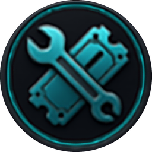
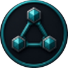
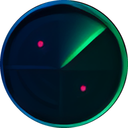
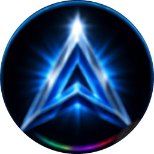

What I built with my Grok Bot seat
Grok drafts the ticket notes.
I press Send.
A tour of how I use Grok Bot for my S1 Technology work: the daily ticket workflow, the end-of-shift report, scripting, and automation for the enclave. You can try the scripts right on this page.
 REMY
REMY
PATCH
NETTY
RADAR CHRONO
CHRONO PELICAN
PELICAN
DELTAWhy there's no enclave demo today
The seat was planned around a GCC High enclave. That enclave isn't running yet, so I put the seat to work on the job I have now.
The seat
Came with my move into CMMC work. The plan was built around a GCC High enclave.
The status
The enclave isn't up and running yet, so there's nothing to demo inside it.
The approach
Put it to work on today's job, and use the time to get ready.
CMMC = Cybersecurity Maturity Model Certification, Level 2 · GCC High = Microsoft Government Community Cloud High
One bot per job
Each bot gets one job and only the access that job needs. DELTA leads and hands work to the others.
Same rules for every bot
- Every message is a draft. Nothing goes out without me.
- Read-only in ConnectWise, the RMM, and MTX.
- Never holds credentials, client data, or CUI.
- Least privilege: only the access its job needs.
Share of usage, Oct 21 – Nov 20
REMY and SENTRY are low for one reason: the enclave isn't running yet.
MSP = managed service provider · M365 = Microsoft 365 · CISA KEV = Cybersecurity and Infrastructure Security Agency Known Exploited Vulnerabilities · RMM = remote monitoring and management tool · CUI = Controlled Unclassified Information
Tickets and time, drafted for me
When I start a ticket, the clock starts. By the time I'm done, the note and time entry are waiting for my approval.
Ticket starts
DELTA starts a clock.
Phone call
CHRONO pulls the call time from RingCentral.
Draft ready
Note and time entry, using my rules.
I approve
Then PATCH posts it.
Email-only work
Call work
Connected time + 10 min wrap-up
Reply alert
Every 30 min
Weekdays, only when someone's waiting
Time saved per week
~3 hrs/week est.
Time-saved figures marked "est." are rough estimates until I finish measuring them.
The end-of-shift report
Grok reads the ticket board through a read-only API and builds the CMMC End of Shift Report, a Microsoft List the pod checks at shift change.
Read-only access
Grok can see the ticket board. It can't change it.
End of every shift
Grok builds the report on its own.
One list for the pod
High-priority tickets stay tracked. Maintenance finishes within the requested or set window.
| Section | Ticket Number | Vendor Name | Description | Maintenance Window | Personnel Assigned | Est Completion Time | Status |
|---|---|---|---|---|---|---|---|
| P1 | High-priority tickets | ||||||
| P2 | High-priority tickets | ||||||
| Pod Maintenance | Maintenance the pod runs | ||||||
| Vendor Maintenance | Maintenance a vendor runs | ||||||
API = application programming interface · P1 / P2 = Priority 1 / Priority 2
Try the scripts
These are the PowerShell scripts I use on S1 tickets, built with Grok and refined over several versions. Pick one, choose dry run or full run, and press Run to watch what it does step by step.
Left: what the user sees. Right: the script working. A full run shows the fix; a dry run leaves the PC as it was.
AD Connect delta sync
The one-liner I run after directory changes.
Start-ADSyncSyncCycle -PolicyType Delta
M365 = Microsoft 365 · OST / NST = Outlook offline data files · MDM = Mobile Device Management · AD = Active Directory · WAM = Web Account Manager
The CMMC Level 2 Enclave Toolkit
Every tool that goes into an enclave holding CUI has to be judged the same way, with evidence. This template does that, and it's vendor-neutral: no picks, no pricing, just evidence.
Define the CUI boundary
Evaluate each tool
Map to NIST 800-171 families
Record decision and evidence
Feed the System Security Plan (SSP)
Vendor-neutral
No picks, no pricing. Just the evidence an assessor will ask for.
Automation ideas for the enclave
A short presentation on what we could automate once the enclave is running. These are proposals, not built yet. Use the arrows, the dots, or your arrow keys.
Talvex Firewall Lab
My FortiGate-style training lab. Practice firewall work in the browser with guided missions.
CUI = Controlled Unclassified Information · NIST SP 800-171 = the security requirements behind CMMC Level 2 (numbers shown are Rev. 2) · AC = Access Control · IA = Identification and Authentication · AU = Audit and Accountability · CM = Configuration Management · SI = System and Information Integrity · RA = Risk Assessment · CA = Security Assessment · MA = Maintenance · MFA = multifactor authentication · POA&M = Plan of Action and Milestones · SSP = System Security Plan · RMM = remote monitoring and management
The Enclave Cloud Builder Scoping · not built yet
Every new department project and every new customer needs its own environment. Building each one by hand doesn't scale. This is a Terraform application I'm scoping: describe the environment once in a short JSON file, build the whole thing locally inside the enclave, test it, then port the same file to Azure.
The pressure
More departments and more customers means more projects, and each one needs a network, servers, access, and logging stood up before work can start.
The idea
One JSON file describes the environment. Terraform reads it and builds everything from a library of approved, pre-hardened building blocks.
The payoff
Build and test locally inside the enclave first. When it's right, change one line and the same file builds it in Azure Government.
Try it: one file, two targets
Pick a blueprint, then switch the target. The JSON barely changes. That's the whole point. Output is an example, not a real run.
How a project flows
Six steps, the same every time. Click any step for detail. Two of them stop for a person.
What it's made of
Everything that builds runs inside the boundary. The enclave is a GCC High environment that can talk to Azure Government directly, so an approved plan deploys straight from my machine in the enclave. Nothing is carried across by hand.
deploys direct
GCC High to Azure Gov
Where it gets used
New customer onboarding
Pick the blueprint, fill in the JSON, and the customer's environment is built the same way as the last one, not rebuilt from memory.
New department project
A project that needs its own space gets a tested copy of the baseline instead of a ticket queue of manual setup.
Test and training labs
Spin up a throwaway copy locally to try a change or train someone, then tear it down. No cloud bill for practice.
Rebuild after an incident
If an environment has to be rebuilt, the file is the rebuild plan. Same network, same settings, same controls.
Assessor walk-through
Show the assessor the baseline as code, every approved plan, and every change, all tied to who approved it and when.
Drift checks
Re-run the plan against a live environment. If anything was changed by hand, the plan shows it. This feeds PATCH's drift idea in section 06.
Why it helps with CMMC
| Requirement | How the builder helps |
|---|---|
| CM 3.4.1 Baselines and inventory | The module library is the baseline. The request files and state are the inventory. |
| CM 3.4.2 Security settings | Hardened settings live inside the modules, so every build gets them. |
| CM 3.4.3 Change control | Every change is a reviewed file change plus an approved plan, with a name and a date. |
| CM 3.4.5 Who can change things | Only the deploy identity can build. People approve; nobody clicks in the portal. |
| SC 3.13.1 / 3.13.2 Boundaries and secure design | Segmentation and secure network design are built in, the same way every time. |
| AU 3.3.1 Logging | Logging is part of every blueprint, not a step someone can forget. |
Questions I expect
Why not just build it in the Azure portal?
Clicking works once. It doesn't work the twentieth time, and it leaves no record of what was set or why. A file is repeatable, reviewable, and becomes evidence on its own.
Who writes the JSON?
I do. I write each project’s JSON file, and the builder checks it before anything runs. Because it’s plain JSON, a simple intake form could fill it in later, but that’s not part of the first version.
Why JSON instead of Terraform's own language?
Terraform reads JSON natively. JSON is easy for a form, a script, or another tool to write, so a request can come from a simple intake form later, and it's easy to validate against a schema before anything runs.
Can it really build "Azure" locally?
Not Azure itself. The local build is a working copy of the same design (networks, segmentation, servers, access, and logging) on the enclave's own infrastructure. Each building block has a local version and an Azure version behind the same inputs, so the request file doesn't change. Azure-only services are checked in the plan before anything is deployed.
How does it get from the enclave to Azure?
Directly. The enclave is a GCC High environment, and GCC High can talk to Azure Government, so an approved plan deploys straight from my machine in the enclave to the Azure Government subscription. No files are exported or carried across by hand. Terraform, the providers, and the modules are mirrored locally, so local builds don’t depend on the internet.
What about Terraform's license?
Terraform is under the Business Source License. OpenTofu is the open-source fork and reads the same files. That choice is part of the scoping, and it goes through the enclave toolkit like every other tool.
What's the first step?
One blueprint, end to end: the CMMC Level 2 workload, built locally, tested, and ported to a test Azure Government subscription. That gives real timing instead of guesses.
JSON = JavaScript Object Notation · CUI = Controlled Unclassified Information · CMMC = Cybersecurity Maturity Model Certification · SSP = System Security Plan · IP = Internet Protocol · NIST SP 800-171 Rev. 2 families: CM Configuration Management, SC System and Communications Protection, AU Audit and Accountability
Skills: the same steps, every time
A skill is a saved playbook for an AI assistant. It tells the assistant when to use it, what to ask, what to do, and what it must never do. I built these with Claude. No client data or CUI goes into any of them.
Dress It Up
Makes a plain web page or document look finished, in your style, without touching the words.
A preview of the question step. Pick answers and watch the sample restyle.
Run a script as admin
One pasteable command instead of right-click, Run as administrator.
Start-Process powershell -Verb RunAs -ArgumentList '-NoExit','-ExecutionPolicy','Bypass','-File','C:\Users\<user>\Downloads\Reinstall-M365Apps.ps1'Script runbooks
Each fix script is saved with its runbook, so anyone on the team runs it the same way.
CUI = Controlled Unclassified Information · README = the front-page document of a code repository · UAC = User Account Control, the Windows “Do you want to allow…” prompt
What carries into the enclave
| Area | What carries over |
|---|---|
| Maintenance | Ticket clock, time rules, SENTRY's maintenance board |
| Tool decisions | The enclave toolkit, mapped to NIST SP 800-171 |
| New environments | The cloud builder: one JSON file, built and tested inside, ported to Azure |
| Inside the boundary | AI helps build small tools. The tools run inside. CUI never leaves. |
Next: timing one control family end to end, for real numbers. Target date: Dec 19, 2026
CUI = Controlled Unclassified Information · NIST SP = National Institute of Standards and Technology Special Publication · AI = artificial intelligence